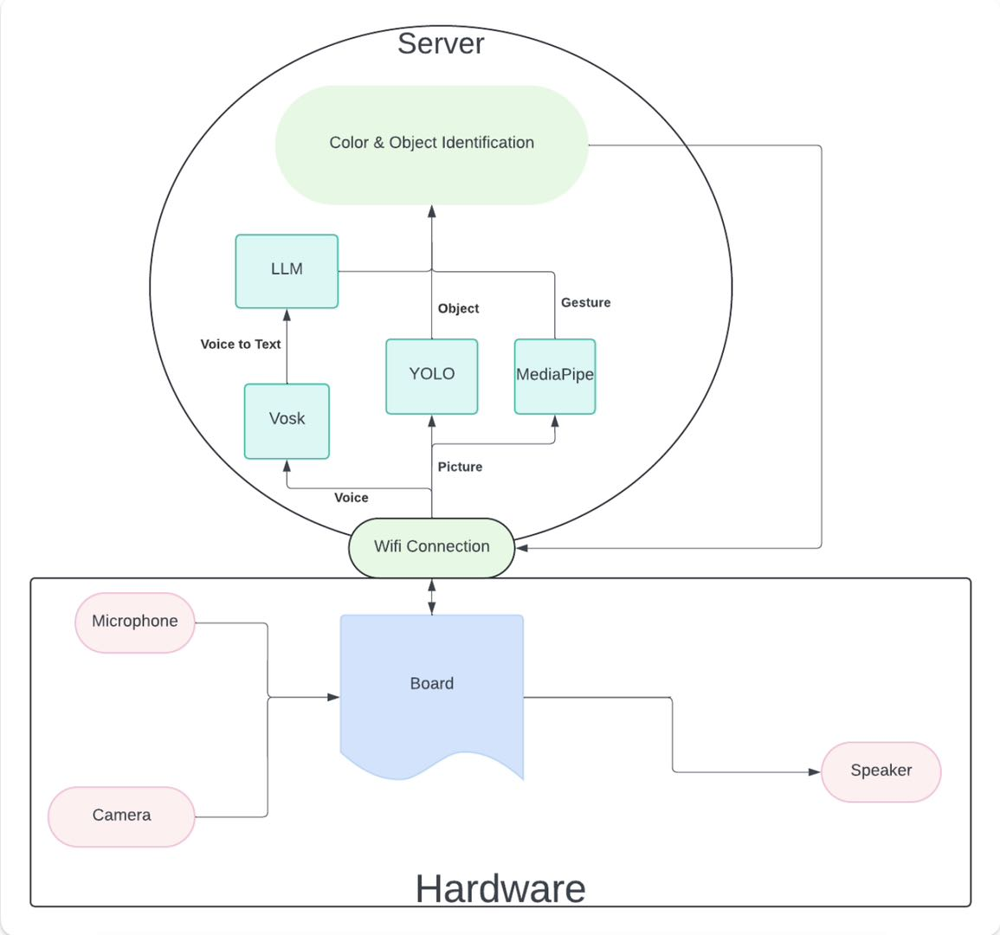
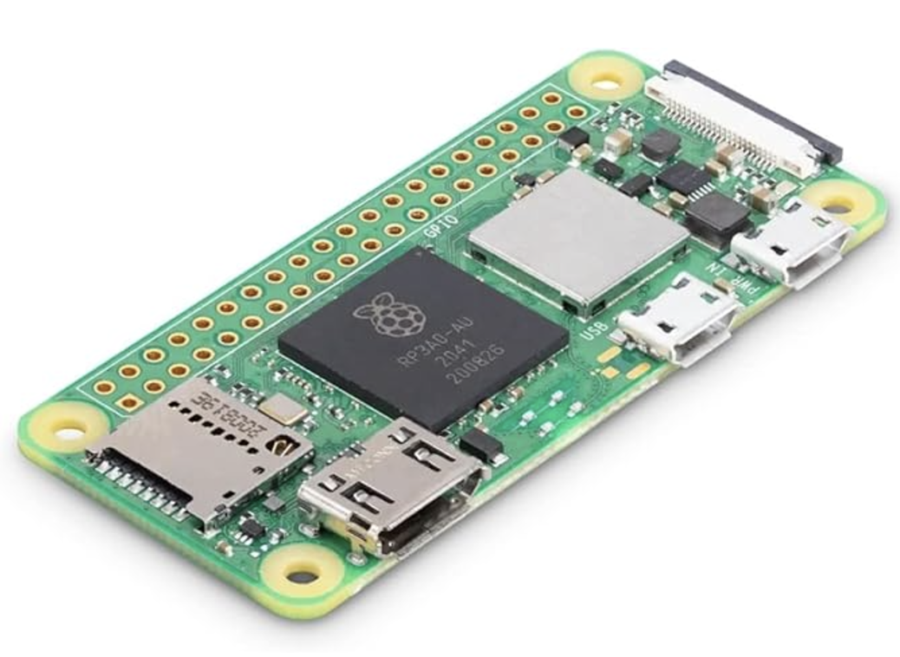
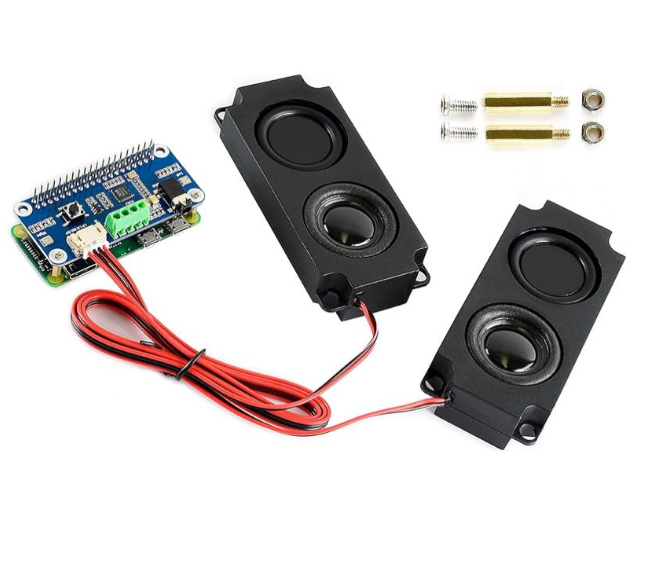
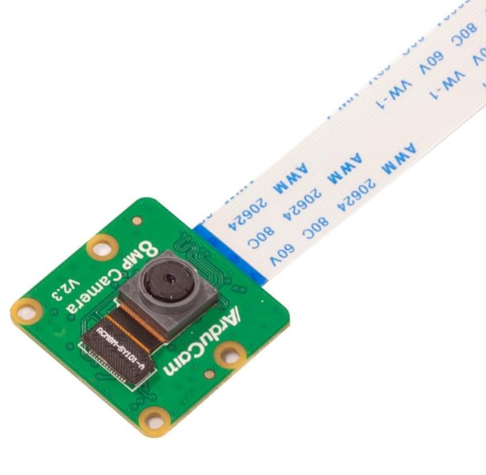

ColorSense
Real-time portable color recognition helper
Detects object the user pointing at and voice commands and provide real-time feedback of the color of the target..
Motivation
Color blindness is a common condition affecting approximately 1 in 12 men and 1 in 200 women worldwide, making everyday tasks that require color differentiation—such as selecting clothing, reading color-coded charts, or identifying traffic signals—significantly more challenging. These obstacles can hinder professional opportunities, daily productivity, and even safety in certain situations.
With ColorSense, we aim to bridge this gap by empowering individuals with a reliable and intuitive solution for real-time color recognition. By leveraging advanced technologies like object detection, gesture recognition, and voice commands, ColorSense provides users the ability to confidently tackle color-related tasks, enhancing their independence and improving their quality of life.
System
Remember to use combination of descriptions, photos, and figures
Architecture
The system adopts a distributed architecture composed of hardware modules and server-side functionalities, working collaboratively to perform color and object identification tasks.
1. Hardware Module:
The hardware module includes a microphone, camera, LED, and speaker, all controlled via a central board (e.g., Raspberry Pi or similar embedded device). The microphone captures user voice commands, the camera takes environmental pictures, the LED provides visual color feedback, and the speaker delivers voice output.
2. WiFi Communication:
The hardware module communicates with the server via WiFi. Captured images and voice data are sent to the server, while processed identification results are sent back for user interaction.
3. Server-Side:
The server performs the core processing and includes the following components:
- Whisper: Converts voice data into text for parsing user commands.
- YOLO: Identifies target objects in the images.
- MediaPipe: Detects gestures to assist user interactions.
- Color & Object Identification Module: Combines YOLO and gesture information to provide color detection and object identification results.
This architecture enables real-time color recognition and object detection, offering an effective solution for color-blind users.

Figure: System Architecture Diagram
Technical Components
The hardware module of the system includes the following key components:

Raspberry Pi Zero 2 W

WM8960 Audio HAT Module

Arducam IM219 Camera Module
Prototype
Blah blah blah
Results
ColorSense can successfully work on over 80 kinds of objects, and distinguish between colors that are easy to be confused like light yellow/green.
Its performance highly dependent on a silent background of voice input due to limited budget for denoising module.
References
- YOLO (You Only Look Once) Object Detection: https://docs.ultralytics.com/models/yolo11
- Mediapipe Hand Landmark: https://mediapipe.readthedocs.io/en/latest/solutions/hands.html
- Whisper Speech Recognition: https://github.com/openai/whisperk
- Raspberry Pi Zero 2 W: https://www.raspberrypi.com/products/raspberry-pi-zero-2-w/
- WM8960 Audio HAT Module: https://www.waveshare.com/wiki/WM8960_Audio_HAT
- Arducam Camera Module: https://www.arducam.com/product/90524//

Contact
James Zhang: tz2642@columbia.edu
Nuocheng Wang: nw2568@columbia.edu
Haotian Zhang: hz2994@columbia.edu
Columbia University Department of Electrical Engineering
Instructor: Professsor Xiaofan (Fred) Jiang